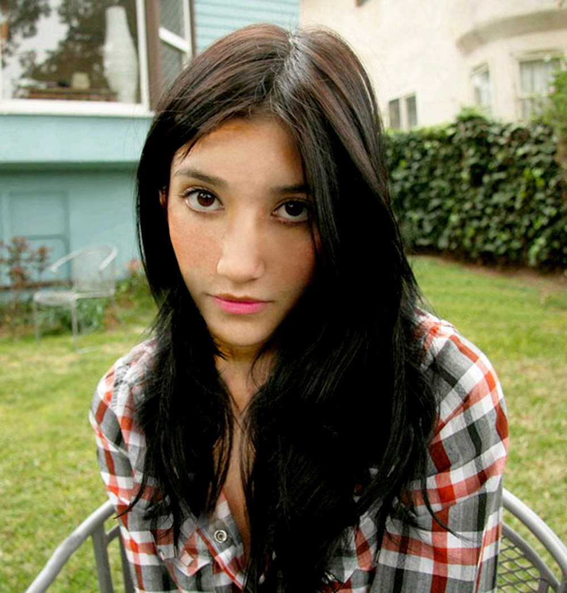
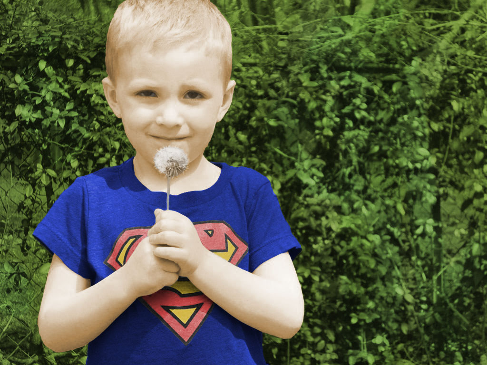
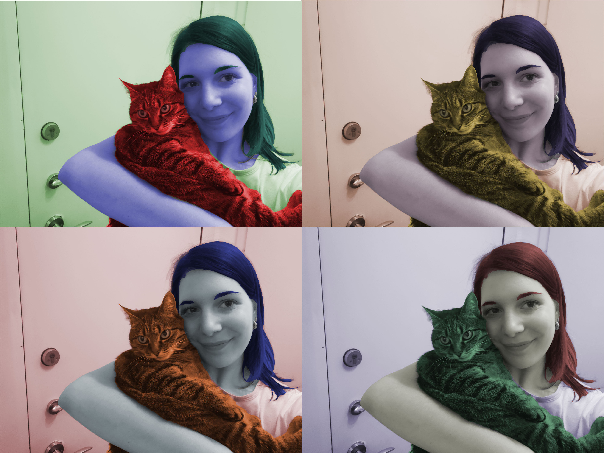
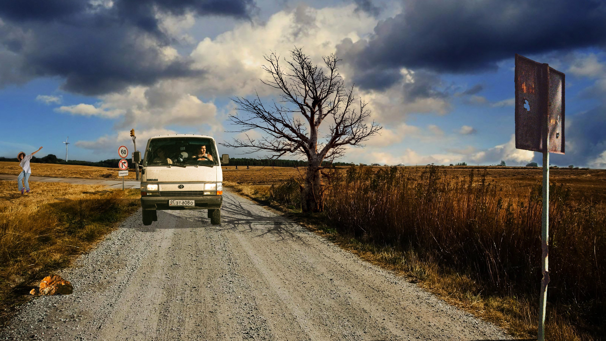
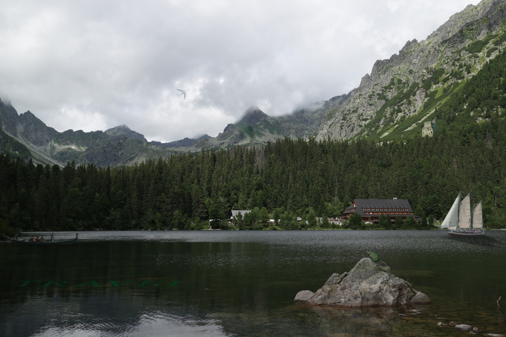

Za vježbe manipulacije fonta koristila sam porgram FontForge, za osnove vektorske grafike Inkscape.
Prva vježba je bila izrada fonta za slova vlastitog imena. Link na moj prvi font
Druga vježba uključivala je upoznavanje s programom Inkscape i crtanje Bezierovih krivulja u programu
PDF s vježbom
Tehnikama za dupliciranje i kreiranjem swatchewa uz alat Pen za treću vježbu sam napravila
cvijet u sklopu
zadatka te samostalni dio.
Zadnja vježba prije projektnog zadatka iz ovog dijela gradiva pružila nam je novo znanje o gradijentima i transparenciji
kroz prikaz čaše,
a ja sam za svoj samostalni zadatak napravila kupaonsku pipu.
Projektni zadatak bio je sastavljen od svih elemenata koje smo naučili u ovom dijelu vježbi. Sastojao se
od dva dijela; prvi dio je uključivao izradu svojeg fonta koji čini riječ Voće, a drugi iscrtavanje slike koristeći se
Bezierovim krivuljama.
Vježbe - piksel grafika
Za vježbe retuširanja, koloriranja i fotomontaže koristila sam se softwerom Adobe Photoshop, a alternativna
mogućnost za ovaj dio vježbi bio je softwer Gimp. Peta vježba bila je prva u novom dijelu gradiva te je uz razne alate
zahtjevala retuširanje fotografija. Prvi dio je bio zadan kroz vježbu, a drugi smo odabrali po izboru.

U šestoj vježbi prošli smo tehnike neinvazivnog koloriranja kojima smo crno-bijele fotografije pretvarali u
fotograifje u boji. Stvaranjem maski i apliciranjem boje u zasebnom layeru ostavili smo originalnu fotografiju netaknutom.
Prvi zadatak bio je unaprijed određen, a samostalni dio je trebao uključivati fotografije nas.


Sedma vježba uvela nas je u područje fotomontaže uz kombiniranje više fotografija u jednu cjelinu koja prikazuje određenu priču.
Također smo kroz ovu vježbu uvidjeli važnost sjena i svjetla prilikom fotomontaže i to na svojem radu.

Kao zaključak svake cjeline, pa tako i ove, slijedio je projektni zadatak kojim smo uokvirili svo zananje kroz prethodnih nekoliko
tjedana. Dobili smo na izbor pozadine, temu i elemente koje želimo uklopiti u jednu sliku uz korištenje transparencije, sjena,
koloriranja i drugih alata. Ovaj zadatak bio mi je jedan od dražih do sad.

Vježbe - video/web
Zadnja skupina vježbi započela je s izradom kinemagrafa i obradom videa te završava s izradom web stranica u htmlu.
Osma vježba bavila se osnovama uvođenja multimedije u određeni video projekt i obradom video materijala u obliku kinemagrafa.
Izradu tog video isječka koji se ponavlja u beskonačnost započeli smo stvaranjem gifa svijeće, a za samostalni zadatak
sam napravila gif zvijezde padalice.
Sljedeća vježba saznivala se na video obradi uz razne video efekte te uređivanje video isječaka. Uz to,
vježbali smo i obradu audio zapisa, a moji rezultati su samostalni video.
Konačno, deveta vježba, i ujedno zadnja prije zadnjeg projektnog zadatka ovaj semestar, uvela nas je u stvaranje web
stranica pomoću označnog jezika html čije stiliziranje se definira jezikom css. Koristeći se programom Notepad ++ uspješno sam
stvorila svoju prvu web stranicu.


{kind=link}
{kind=link}
{kind=link}
{kind=link}
{kind=link}
{kind=link}